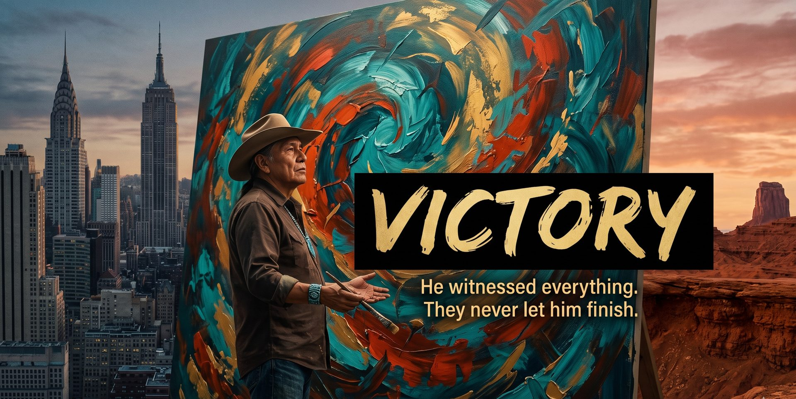
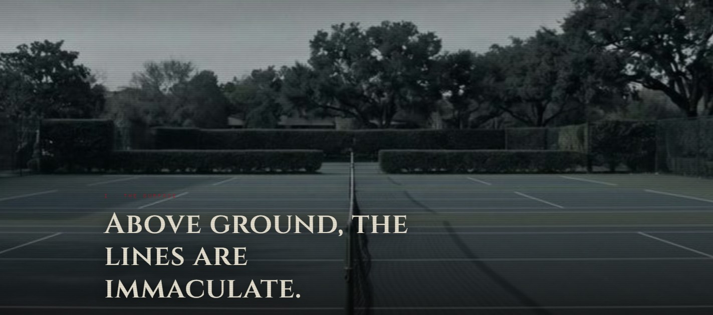
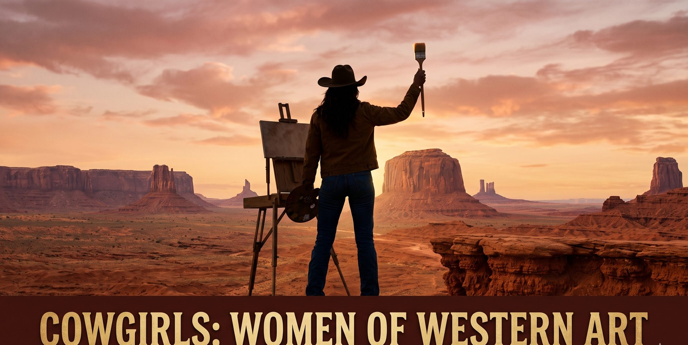

Flagship Projects
The Work That Defines the Slate
Two in active development. Two completed. All four appear in full detail in the slate below.
In Development

In Development
Prestige Biographical Drama · Feature · ~$20M
Victory
The art and life of Poteet Victory — Cherokee-Choctaw painter, Smithsonian collection artist, Hall of Fame inductee. From bull riding in Oklahoma to Andy Warhol's New York to master painter in Santa Fe. He was commissioned to paint a Trail of Tears mural by the University of Oklahoma. The university stopped it when the truth became too visible. IP optioned. Life rights secured.

Script Complete · Production Ready
Elevated Horror-Thriller · Feature · ~$500K · SAG-AFTRA MLB
Blood Court
A girl digs into her boyfriend's murder at an elite tennis club — and discovers her family has been running an Aztec death cult beneath it for a century, grooming her to be its next queen. Written by Saul Espinoza. Story by Marc Sternberg. Directed by Tierra "TT" Frost & Dawit. WGAE Registered. Cast wishlist attached. Seattle, WA.
Completed

Completed · Entering Film Festivals
Short Film · ~15 min · SAG-AFTRA Student · Chapman University MFA Thesis
JUK
Georgia, 1950s. Skip, 17, sneaks out to a juke joint for the first time — the first night she chooses herself. Written & directed by Tierra "TT" Frost. ASC Heritage Award · Out on Film Grant · PBS Fine Cut Semi-Finalist. .

Post-Production · Tribeca WIP 2027 Target
Feature Documentary · Narrated by Red Steagall, Country Music Hall of Fame
Cowgirls: Women of Western Art
Female artists dismantling a century of gendered exclusion from Western art's most prestigious institutions. 50+ interviews. 18 featured artists. 11 institutional partners. Principal photography complete.